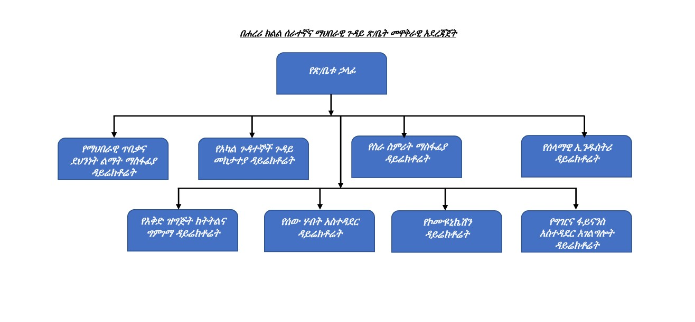
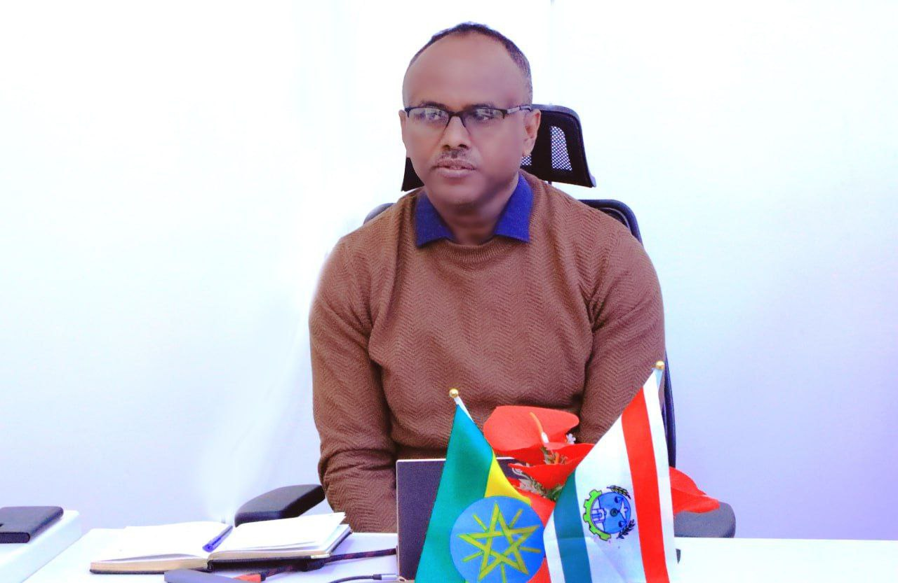
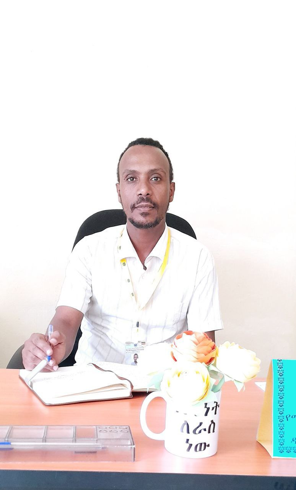
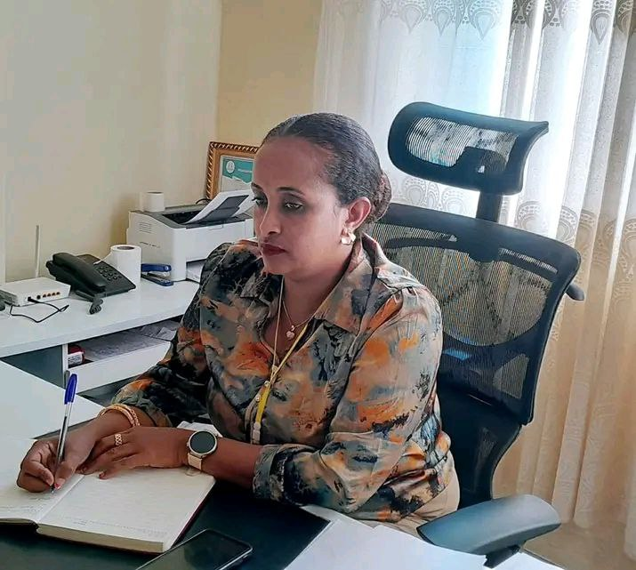
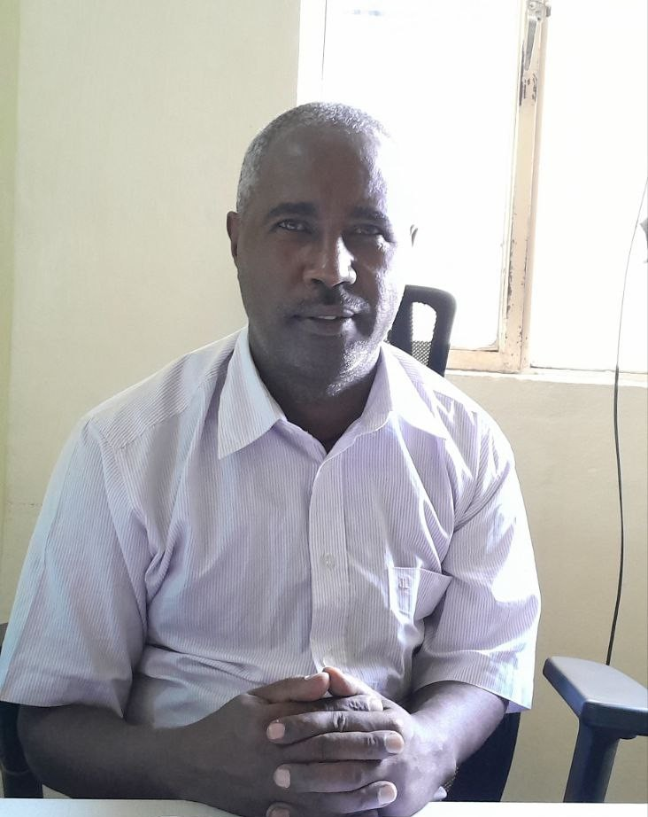
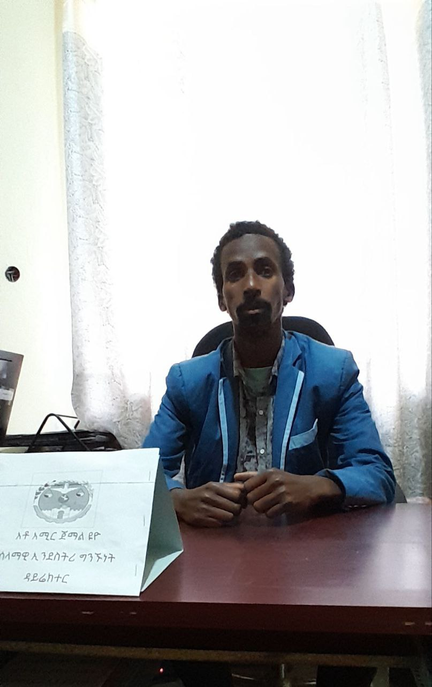

The governing body of the Harari Regional Labor and Social Affairs Office is the main starting point and main force in carrying out the mission and vision of the institution and coordinates all the processes of the office from start to finish. This governing body operates under the leadership of Head Abiy Abebe and with the inclusion of more mature and experienced leaders, and is responsible for the implementation of the institution's work plan and performance recording in advance and accurately. The administration includes various departments in its work structure, which include the Workers' Rights and Support Division, the Division Integrating Social Development and Equal Opportunity Programs, the Cultural Preservation and Reform Division, the Sports and Youth Development Division, and the Intersystems and Resource Management Division. The Governing Body coordinates, monitors and ensures that all activities of the Office are executed in a researcher manner in accordance with these sections. In addition, the governing body strengthens relations with governmental institutions, local societies, legal institutions, and international support institutions, creating a working influence that has a major impact on the institution. It will also continue its work in a thorough and competitive manner according to a work plan prepared according to various proclamations and directives to achieve the mission of the office by focusing on performance quality, improving staff skills and encouraging new capacity.

Oversees all operations, strategic direction, and partnerships for the office.

Supports the Director and manages internal programs and policies.

Manages staffing, employee welfare, and workforce development.

Responsible for budgeting, financial reporting, and resource allocation.

Responsible for budgeting, financial reporting, and resource allocation.